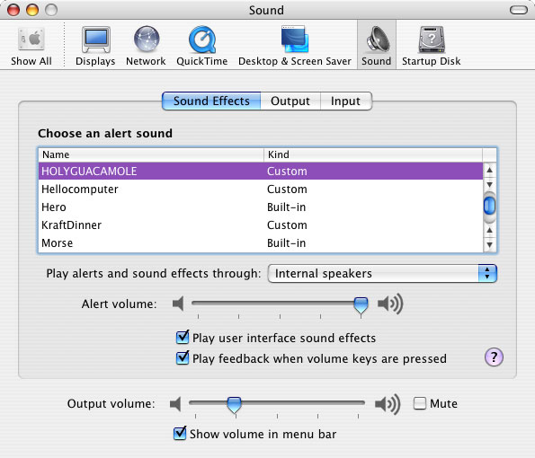
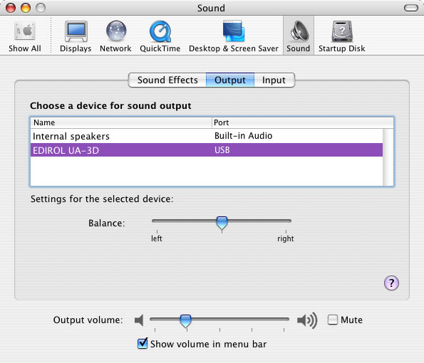

| ADC Home > Reference Library > Technical Notes > Audio > Carbon > | |
|
IntroductionMac OS X allows users to personally select their preferred audio device for Alerts and Sound Effects (the Default System Output Device), as well as the sound output device for all other audio generated by the system (the Default Output Device). These can either be set to the same device (for example Internal speakers) or two completely different devices. The System Sound API allows developers to correctly play Alert Sounds with all the attributes and respecting all system settings for Alerts. This includes flashing the screen in circumstances where audio output is unavailable or because of a user specified preference such as Mute or the Universal Access Hearing Preference "Flash the screen when an alert sound occurs". System Sound also allows developers to correctly play User Interface Sound Effects if the "Play user interface sound effects" checkbox is checked (see Figure 1). In both cases, the audio will be directed to the Default System Output Device selected for Alerts and Sound Effects. Figure 1 shows the Default System Output device for Alert Sounds and Sound Effects (selected from the "Play alerts and sound effects through:" popup) set to Internal speakers, while figure 2 shows the chosen Default Output Device set to the EDIROL UA-3D USB device. A typical user configuration may be iTunes playing purchased music out a pair of USB speakers (Default Output Device) while Alerts and Sound Effects play though the Internal speakers (Default System Output Device). Using the System Sound APIs will guarantee that your application never plays an Alert or Sounds Effect out the wrong device, possibly a pair of speakers turned up very loud blasting SpinalTap's greatest hits. Note: If your application makes use of alert sounds, using the System Sound APIs is a better approach than using some heavier weight methods to play these sound such as NSSound or QuickTime. Figure 1: Alerts and Sound Effects.  Figure 2: Sound Output.  The System Sound APIsThe following APIs are defined in "SystemSound.h", part of the OSServices framework, which in turn is part of the CoreServices umbrella framework. Alert Sounds(available on Mac OS X 10.2 and later) There are two APIs for playing Alert Sounds.
void AlertSoundPlay(void);
void AlertSoundPlayCustomSound(SystemSoundActionID inAction)
inAction: A SystemSoundActionID indicating the desired
Sound to be played with AlertSound behavior.
User Interface Sound Effects(available on Mac OS X 10.3 and later) There is a single API for playing User Interface Sound Effects.
WARNING: Although technically correct, calling
void SystemSoundPlay(SystemSoundActionID inAction)
inAction: A SystemSoundActionID indicating the desired
System Sound to be played.
Creating SystemSoundActionIDs(available on Mac OS X 10.2 and later) There are two APIs for working with
OSStatus SystemSoundGetActionID(
const FSRef * userFile,
SystemSoundActionID * outAction)
userFile: An const FSRef * for the audio file to be used as a System Sound.
Any audio file supported by the AudioFile APIs in the
AudioToolbox framework may be used.
outAction: If successful, a SystemSoundActionID will be returned,
which in turn can be passed to SystemSoundPlay() or
AlertSoundPlayCustomSound().
OSStatus SystemSoundRemoveActionID(SystemSoundActionID inAction)
inAction: A SystemSoundActionID indicating the desired System Sound
to be removed.
Completion Routines(available on Mac OS X 10.3 and later) There are two APIs which let you to work with Completion Routines.
OSStatus SystemSoundSetCompletionRoutine(
SystemSoundActionID inAction,
CFRunLoopRef inRunLoop,
CFStringRef inRunLoopMode,
SystemSoundCompletionUPP inCompletionRoutine,
void * inUserData
inAction: The SystemSoundActionID that the completion routine will be
associated with.
inRunLoop: A CFRunLoopRef indicating the desired run loop the completion
routine should be run on. Pass NULL for the main run loop.
inRunLoopMode: A CFStringRef indicating the run loop mode for the runloop
mode for the runloop where the completion routine will be
executed. Pass NULL to use kCFRunLoopDefaultMode.
inCompletionRoutine: A SystemSoundCompletionProc for the completion
routine proc to be called when the provided
SystemSoundActionID has completed playing in
the server.
inUserData: A void * to pass user data to the completion routine.
void SystemSoundRemoveCompletionRoutine(SystemSoundActionID inAction)
inAction: A SystemSoundActionID that currently has an associated
completion routine.
Example UsageListing 1: Playing a custom Alert Sound.
SystemSoundActionID gFunkSoundID = 0;
OSStatus CreateFunkActionID(void)
{
const char *soundFilePath = "/System/Library/Sounds/Funk.aiff";
FSRef soundFileRef;
OSStatus err;
err = FSPathMakeRef(soundFilePath, &soundFileRef, NULL);
if (noErr == err) {
err = SystemSoundGetActionID(&soundFileRef, &gFunkSoundID);
}
return err;
}
void MyDoSomethingFunction(void)
{
.
.
.
if (badBadThing)
AlertSoundPlayCustomSound(gFunkSoundID);
// NOTE: Make sure to not remove the Action ID
// immediately following this call, you must give
// the system a chance to actually play the sound.
.
.
.
}
void MyCleanUpActionID(void)
{
// Remember to call SystemSoundRemoveActionID for the ActionID
// when you are completely done with it.
// NOTE: Do not remove the Action ID before the system is given a
// chance to play the sound as noted above.
SystemSoundRemoveActionID(gFunkSoundID);
}
Document Revision History
Posted: 2004-07-13 | ||||||||||||
|